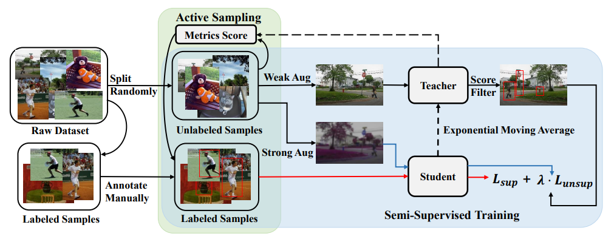

M.Sc. Candidate at Xiamen University |
|
I am currently a final-year postgraduate student in Department of Artificial Intelligence, School of Informatics, Xiamen University, supervised by Prof. Xiaoshuai Sun and Prof. Rongrong Ji. The outline of my experience is as follows:
My current research interests include deep learning, computer vision and pattern recognition, multimedia content analysis and retrieval. More recently, I focus on multimodal learning, especially on vision and language.
|  | Peng Mi, Jianghang Lin, Yiyi Zhou, Yunhang Shen, Gen Luo, Xiaoshuai Sun, Liujuan Cao, Rongrong Fu, Qiang Xu, Rongrong Ji✉
Active Teacher for Semi-Supervised Object Detection IEEE/CVF Conference on Computer Vision and Pattern Recognition (CVPR), 2022 [pdf coming] [code] |
| Jiayi Ji, Yunpeng Luo, Xiaoshuai Sun✉, Fuhai Chen, Gen Luo, Yongjian Wu, Yue Gao, Rongrong Ji
Improving Image Captioning by Leveraging Intra- and Inter-layer Global Representation in Transformer Network Proceedings of the AAAI Conference on Artificial Intelligence (AAAI), 2021 |
|
| Yiyi Zhou, Rongrong Ji✉, Xiaoshuai Sun, Gen Luo, Xiaopeng Hong, Jinsong Su, Xinghao Ding, Ling Shao
K-armed Bandit based Multi-Modal Network Architecture Search for Visual Question Answering Proceedings of the 28th ACM International Conference on Multimedia (ACM MM), 2020 [pdf] |
|
| Gen Luo, Yiyi Zhou✉, Rongrong Ji, Xiaoshuai Sun, Jinsong Su, Chia-Wen Lin, Qi Tian
Cascade Grouped Attention Network for Referring Expression Segmentation Proceedings of the 28th ACM International Conference on Multimedia (ACM MM), 2020 [pdf] |
|
| Gen Luo, Yiyi Zhou, Xiaoshuai Sun, Liujuan Cao, Chenglin Wu, Cheng Deng, Rongrong Ji✉
Multi-Task Collaborative Network for Joint Referring Expression Comprehension and Segmentation IEEE/CVF Conference on Computer Vision and Pattern Recognition (CVPR), 2020 [pdf] [arXiv] [code] |
| Gen Luo, Yiyi Zhou✉, Jiamu Sun, Shubin Huang, Xiaoshuai Sun, Qixiang Ye, Yongjian Wu, Rongrong Ji
What Goes beyond Multi-modal Fusion in One-stage Referring Expression Comprehension: An Empirical Study arXiv preprint arXiv:2204.07913, 2022 [arXiv] [code] |
|
| Chaoyang Zhu, Yiyi Zhou, Yunhang Shen, Gen Luo, Xingjia Pan, Mingbao Lin, Chao Chen, Liujuan Cao✉, Xiaoshuai Sun, Rongrong Ji
SeqTR: A Simple yet Universal Network for Visual Grounding arXiv preprint arXiv:2203.16265, 2022 [arXiv] [code] |
|
| Gen Luo, Yiyi Zhou✉, Xiaoshuai Sun, Xinghao Ding, Yongjian Wu, Feiyue Huang, Yue Gao, Rongrong Ji
Towards Language-guided Visual Recognition via Dynamic Convolutions arXiv preprint arXiv:2110.08797, 2021 [arXiv] |